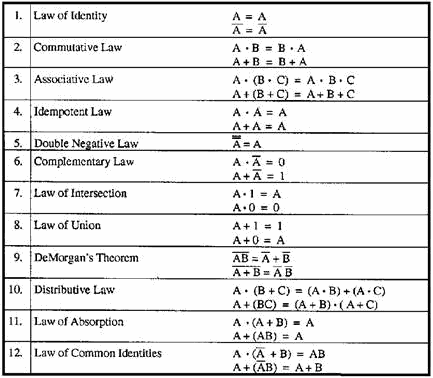
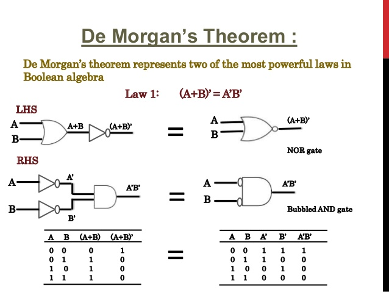

Applications of Boolean Algebra are vast across STEM and philosophy. To those who program, some concepts of Boolean Algebra should seem intuitive, even if you haven’t heard of the system. In most programming languages, there are logical operators that represent logic gates, and even a “boolean” datatype named after Boole himself, which holds a “true” or “false” value. These “true” and “false” values are represented numerically by 1s and 0s, and thus can be compared to a binary switch. This concept of a “switch” reveals how electrical engineers apply Boolean Algebra through circuit switches which use physical logic gates. This concept lays the foundations for “transistors” which line the motherboard of every computer, allowing it to save and manipulate binary data. Thus, Boole’s work lays the foundation not only for most software for every computer and electronic device but the hardware as well. To the mathematician, Boolean Algebra is an important element of Mathematical Logic, George Boole provided a more rigorous framework of Aristotelian Formal Logic and sparked a mathematical renaissance where logic could be studied using math in the mid 19th century. This system of mathematics was also applied to computer science, particularly when Alan Turing used Mathematical Logic to create a theoretical model of a “Turing Machine”, a basic theoretical model of a computer which led to the first electronic computers. Some modern problems in Computer Science can also be traced back to Boole’s insights. Within the field of Artificial Intelligence, the invention of “Neural Networks” modeled off a computational model of the brain was likely influenced by Boole’s computational view of the mind. Boole may have named his paper “Laws of Thought” to hint at a belief that the mind’s thoughts are structured using formal logic.

Notice that associative and communitive laws are used in elementary Algebra. Aristotle wrote the Law of Identity in "Prior Analytics".

Demorgan's Theorem's are read as "A AND NOT gate or NAND gate is equivalent to an inverted OR gate." and "A OR NOT gate or NOR gate is equivalent to an inverted OR gate". In computer science, we learn about AND, OR, and NOT logical operators. When learning about binary arithmetic, you are likely to learn of logical inversion as it applies to processes such as Two's Complement. Together these Theorems tell us a very useful insight into logic which is used in computer programming and electrical engineering.